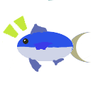

SabaTweet is a new Twitter client
SabaTweet はツイッターヘビーユーザのための新しいツイッタークライアントです。もちろん初心者にも使いやすいよう配慮されています ;)
このアプリケーションはバックエンドにRDBMSを持ち、確実に読み込んだ(あるいはあなたがポストした)ツイートを保護します。また最新のWPFによってモダンなUIを実現しています。
downloads
現在最初のリリースに向かって鋭意作業中です。リリースまでしばらくお待ちください。このリリースはツイッタークライアントして基本的な機能を備えたリリースになる予定です。
特長
- Twitter表示要求(Display Requirements)に完全準拠
- 画像のインプレースプレビュー
system requirements
- Windows XP 以上
- .NET Framework 4.0 以上 を要求します。開発者は Windows XP と Windows7 上で開発を行っています。
support & contact
SabaTweet は@TeamScomberが開発しています。